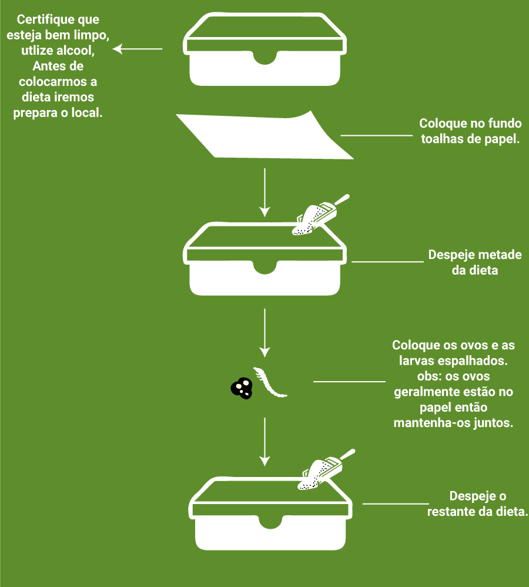

Guia de preparo
1 - Preparo dos Materiais
Primeiramente iremos preparar uma solução onde iremos depositar os nematoides. É importante configurar a B.O.D. em 15 graus.

1.1 - Preparo da dieta
Precisamos agora preparar a dieta para criação das lagartas, Pegue o recipiente plástico para misturar os ingredientes seguindo a seguinte ordem:
![Primeiro - Espalhe a farinha de trigo no fundo do recipiente(200 gramas). Segundo - Espalhe o farelo de trigo no fundo do recipiente(200 gramas). Terceiro - Espalhe bem o leite em pó (400 gramas). Quarto - Espalhe bem o Levedo de Cerveja(120 gramas). Quinto - Coloque o Mel no centro da receita com o auxílio de uma colher espalhe bem (240 gramas). Sexto - Coloque a Glicerina no centro da receita e espalhe bem (130 gramas). Sétimo - Espalhe bem água destilada (20 ml). Misture bem todos os ingredientes novamente, garantindo que fique uma mistura consistente Obs: não necessita ficar muito úmida a receita](../img/guia/dieta.png)
Separe outro recipiente para colocar a dieta e neste deposite os ovos ou as larvas da lagarta da seguinte maneira:

1.2 - Seleção das Lagartas
O ciclo de vida da Galleria mellonella é variado pode ser entre 30 a 48 dias. Para a próxima etapa, necessita de lagartas grandes, bem alimentadas, precisa selecionar as lagartas com no minimo 25 dias desde a etapa anterior.
As lagartas que estiverem suas pupas (casulos) é interessante mante-las até que virem mariposas. As lagartas que tiverem virado mariposa é preciso armazena-las em outro recipiente para podermos reproduzi-las e assim obter ovos.
1.3 - Reprodução das Mariposas
Separe os materiais:
- Vasilha redonda com tampa
- Papel sufite, jornal ou folha de caderno
- Fita adesiva
Para montarmos o local de reprodução das mariposas.
IBAGEMMMM
2 - Reprodução dos nematoides
Iremos iniciar o procedimento de reprodução dos nematoides, necitaremos dos seguintes itens...
2.1 - Preparo das lagartas
Separe as placas de petri colocando os filtros de papel recortados no fundo da placa, após isto deposite as lagartas na placa de petri. Pegue a solução contento os nematoides e com o auxílio da pipeta automatica, aplique sobre os nematoides.
2.2 - Coleta dos Nematoides
Após x dias, analisar a mortalidade das pragas, verifique quais estão mortas...
2.3 - Armadilha de White
Neste procedimento necessita dos seguintes intens:
Precisamos organizar os itens da seguinte forma: